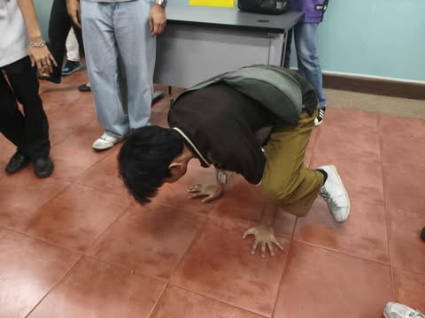

At Five Pillars University, your future starts here. We welcome dreamers, innovators, and future leaders into a community that goes beyond education. More than just a place of learning, FPU is where knowledge inspires, transforms, and empowers you to achieve your greatest potential.
Here, learning extends beyond the classroom—it's about shaping character, building purpose, and preparing you to make a meaningful impact in the world. Whether you are beginning your academic journey or advancing your career, you will find a home at Five Pillars University, where knowledge meets opportunity.

They bring together years of academic expertise, industry experience, and a shared passion for teaching and mentoring. Beyond delivering lessons, they serve as guides, role models, and supporters, ensuring that every student receives the knowledge, skills, and encouragement needed to succeed.
Learn MoreWe offer a wide range of programs designed to meet the needs of today's learners and tomorrow's leaders. From foundational undergraduate degrees to advanced graduate studies, each program is built to combine academic excellence with real-world relevance.
- College of Arts & Humanities
- College of Science, Technology, and Engineering
Our university is equipped with modern, student-centered facilities designed to support both academic excellence and personal growth. From state-of-the-art laboratories and fully equipped libraries to collaborative learning spaces and digital resource centers, students have access to everything they need to succeed.
Learn MoreJadi David Libardo
President, Five Pillars University
Credentials and Academic Background
- Ph.D. in Computer Science, Ateneo de Manila University
- Master's Degree in Computer Science, University of the Philippines
- Bachelor's Degree in Computer Science, Technological Institute of the Philippines
Area of Expertise
- Artificial Intelligence and Machine Learning
- Educational Technology and Digital Innovation
- Software Engineering and Systems Design
- Leadership in Higher Education
Achievements and Contributions
- Published numerous research papers in AI and data science applications
- Recipient of the National Innovators Award in Education Technology
- Spearheaded digital learning platforms that expanded access to quality education
- Advocate of integrating technology with education to empower future leaders
University President
Elieson Loplop
Vice President, Five Pillars University
Credentials and Academic Background
- Ph.D. in Information Technology Management, Carnegie Mellon University
- Master of Science in Data Science, De La Salle University
- Bachelor of Science in Information Technology, University of Santo Tomas
Area of Expertise
- Data Science and Big Data Analytics
- Cybersecurity and Information Assurance
- IT Project Management and Digital Transformation
- Academic Program Development in Technology Fields
Achievements and Contributions
- Recognized as one of the “Top 50 Leaders in Data & IT Education” in Asia
- Developed university-industry partnerships to strengthen applied research in data science
- Introduced innovative IT curriculum models integrating cybersecurity and analytics
- Advocate of preparing graduates for the digital economy through real-world learning
University Vice President
Justine Mark Lalamoro
Administrator, Five Pillars University
Credentials and Academic Background
- Master of Public Administration (MPA), Harvard Kennedy School
- Bachelor of Science in Business Administration, University of the Philippines - Diliman
- Certificate in Educational Leadership and Management, Asian Institute of Management (AIM)
Area of Expertise
- Strategic Planning and Policy Implementation
- Student Services and Campus Operations
- Organizational Leadership and Governance
- Financial & Resource Management in Education
Achievements and Contributions
- Streamlined administrative systems that improved efficiency and transparency
- Led campus modernization projects focusing on sustainability and accessibility
- Established partnerships with local and international organizations for student development programs
- Advocate for creating inclusive and supportive campus environments for both students and staff
University Adminstrator
Marc Matthew Marcellana
Dean of Academic Programs, Five Pillars University
Credentials and Academic Background
- Ph.D. in Education, Stanford University
- Master of Arts in Curriculum and Instruction, University of the Philippines
- Bachelor of Secondary Education, Major in English, University of Santo Tomas
Area of Expertise
- Curriculum Design and Innovation
- Educational Policy and Quality Assurance
- Faculty Development and Pedagogical Strategies
- Academic Program Assessment and Accreditation
Achievements and Contributions
- Led the successful accreditation of multiple undergraduate and graduate programs
- Developed outcome-based curriculum frameworks adopted by partner universities
- Published research on modern pedagogical approaches and inclusive education
- Advocate for lifelong learning and student-centered teaching practices
Dean of Academic Programs
Ivan James Macaraig
Dean of Academic Affairs, Five Pillars University
Credentials and Academic Background
- Ph.D. in Psychology, University of California, Berkeley
- Master of Arts in Guidance and Counseling, University of the Philippines
- Bachelor of Arts in Psychology, De La Salle University
Area of Expertise
- Student Development and Engagement
- Counseling and Mental Health Support
- Leadership and Character Formation Programs
- Campus Life Enrichment and Co-Curricular Activities
Achievements and Contributions
- Established comprehensive student wellness and mental health programs
- Spearheaded leadership and service-learning initiatives that boosted student involvement
- Recognized for innovations in campus life and student-centered services
- Advocate for holistic student growth, balancing academics with personal well-being
Dean of Academic Affairs
Pathways of Knowledge
At Five Pillars University,
education is built on strong foundations that go beyond textbooks and
classrooms. Our offered programs serve as guiding principles, shaping
well-rounded individuals who are prepared for the challenges of
tomorrow. Each pillar reflects our commitment to academic excellence,
personal growth, and meaningful contributions to society.
Through these pillars, we
ensure that every program, course, and experience nurtures not only
knowledge but also character, creativity, and a lifelong passion for
learning.
College of Arts & Humanities
- ● Bachelor of Arts in Communication
- ● Bachelor of Arts in Creative Writing
- ● Bachelor of Arts in Philosophy
- ● Bachelor of Arts in Sociology
- ● Bachelor of Arts in Political Science
- ● Bachelor of Arts in Language and Literature
College of Science, Technology, and Engineering
- ● Bachelor of Arts in Communication
- ● Bachelor of Arts in Creative Writing
- ● Bachelor of Arts in Philosophy
- ● Bachelor of Arts in Sociology
- ● Bachelor of Arts in Political Science
- ● Bachelor of Arts in Language and Literature
Start Building Your Journey
⟶ Apply to the Five Pillar University ProgramOur Spaces, Your Future
Step Five Pillars University, where every facility is thoughtfully designed to support learning, foster creativity, and nurture the growth of future leaders. Our modern classrooms are equipped with the latest technology, enabling dynamic and interactive learning experiences. Innovative laboratories provide students with hands-on opportunities to experiment, discover, and apply their knowledge in real-world scenarios.
Collaborative spaces across the campus encourage teamwork, idea-sharing, and interdisciplinary projects, helping students develop critical thinking, problem-solving, and leadership skills. Beyond academics, our campus offers areas for relaxation, wellness, and creative expression, ensuring a balanced environment where students can thrive both intellectually and personally. At Five Pillars University, every corner is built to inspire, empower, and prepare students to reach their fullest potential.